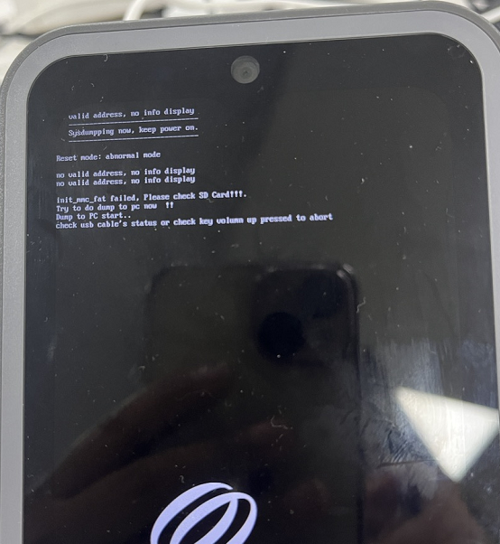
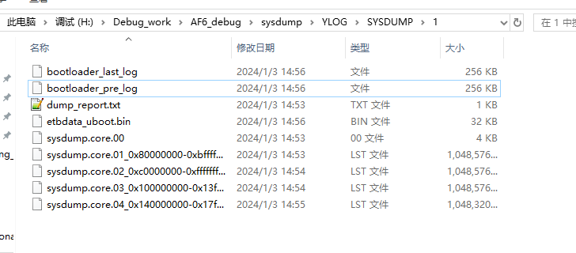
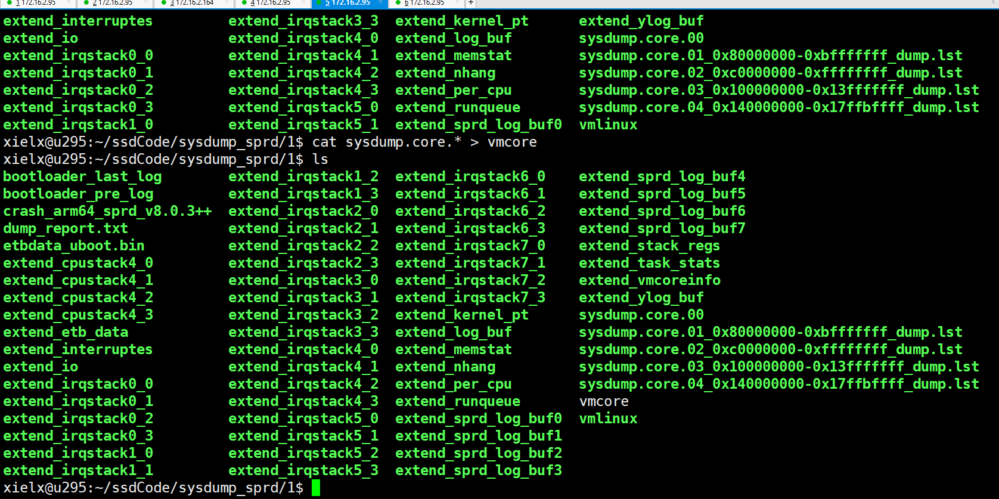
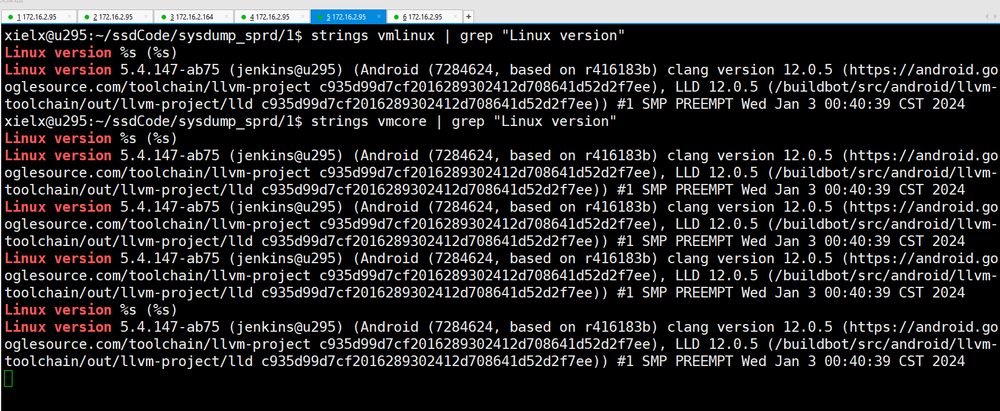
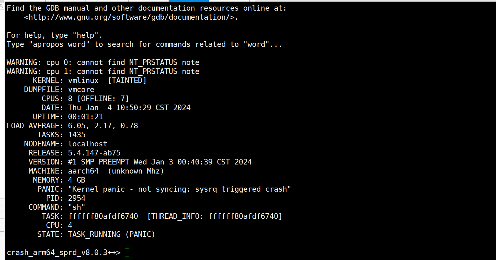
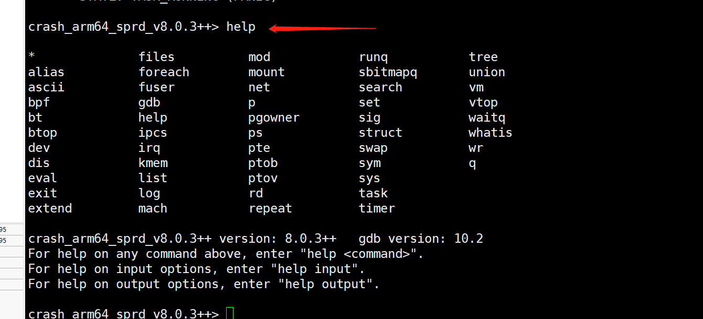
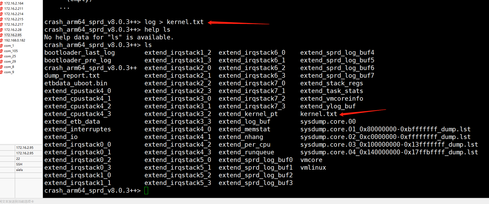
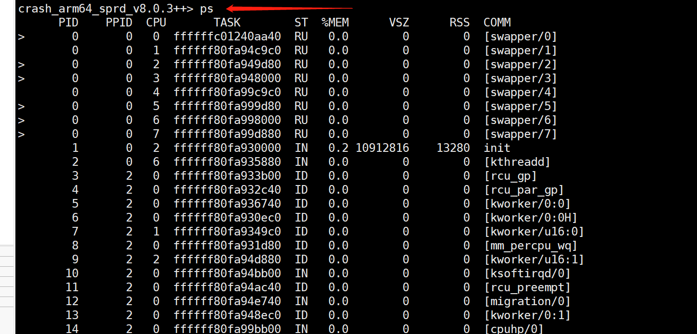
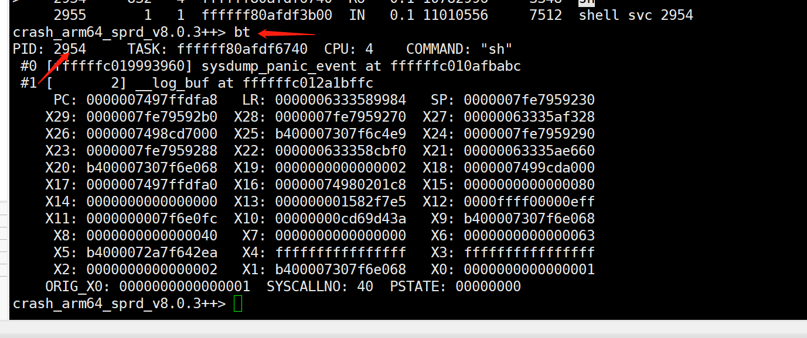

概要¶
展锐平台sysdump 解析,没有电池项目,可能dump模式下,跟pc usb交互有点问题,识别不到展锐的端口
sysdump¶
软件打开sysdump后,kernel等panic会停在sysdump界面,机器有插入sd卡的话,会直接把log信息导入到sdcard
机器没有插入sd卡的话,可以通过工具Logel.exe拉去log到PC

具体sysdump介绍,可以参考展锐官方文档 SysDump简介V2.1.pdf
sysdump解析步骤¶
sysdump导出到sdcard的文件如图

生成vmcore
cat sysdump.core.* > vmcore

判断vmlinux跟vmcore是否匹配

sysdump 解析
./crash_arm64_sprd_v8.0.3++ -m vabits_actual=39 -m phys_offset=0x80000000 -m kimage_voffset=0xffffffbf90000000 vmcore vmlinux

vmlinux 匹配¶
使用如下命令,检查vmcore跟vmlinux是否匹配
strings vmcore | grep “Linux version”
strings vmlinux | grep “Linux version”
测试¶
可以使用echo 'c' > proc/sysrq-trigger手动进入dump模式
Crash工具简介¶
详细使用可以参考文档SysDump简介V2.1.pdf
help

log > kernel.txt
log重定向到kernel.txt,方便查看

ps
查看进程信息

bt
查看backtrace
